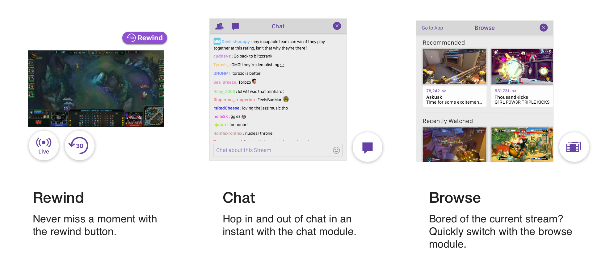
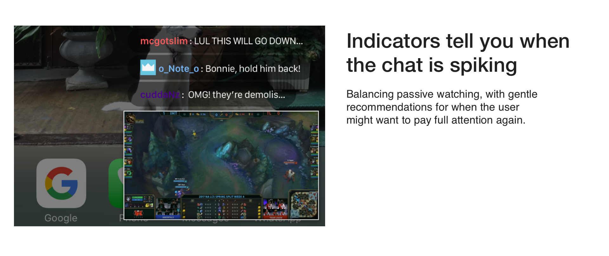
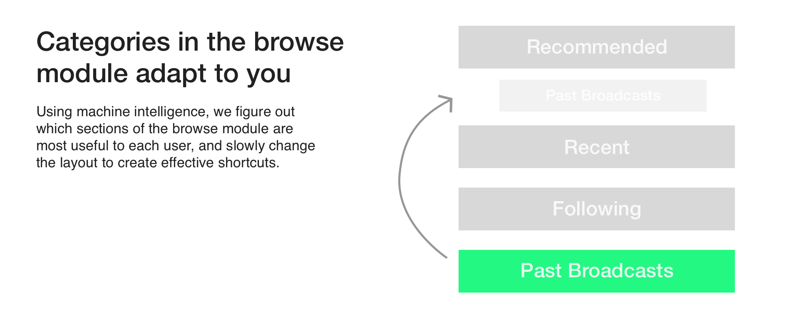
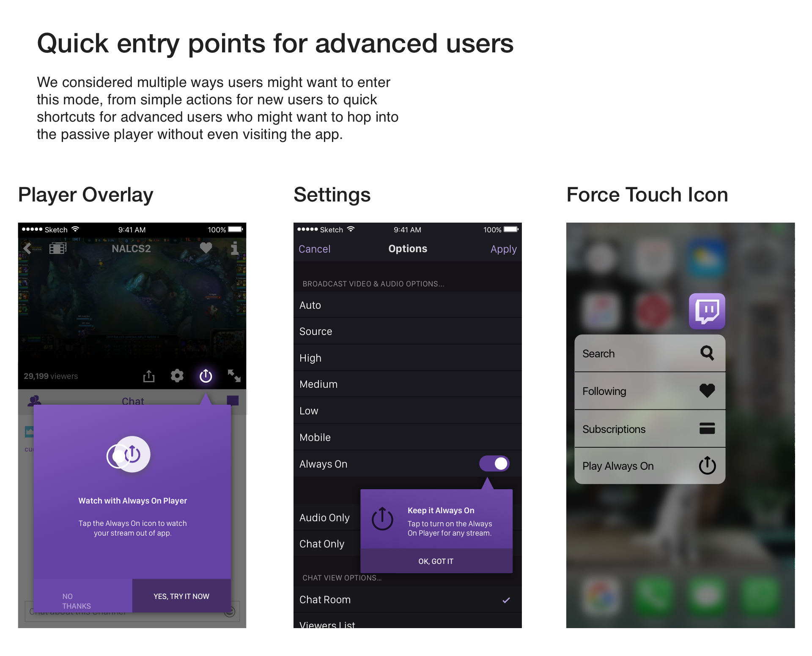

a look into
designing for the
passive watcher in
the digital age of
live streaming.
The assumption designers usually make on video sites is that they have fully attentive viewers. However, in the age of live streaming and constant multitasking, this is not often the case. Our player tackles the newly emerging behaviour of passive watching, for the Twitch mobile app.
We coded a prototype in FramerJS, feel free to play around with it!



